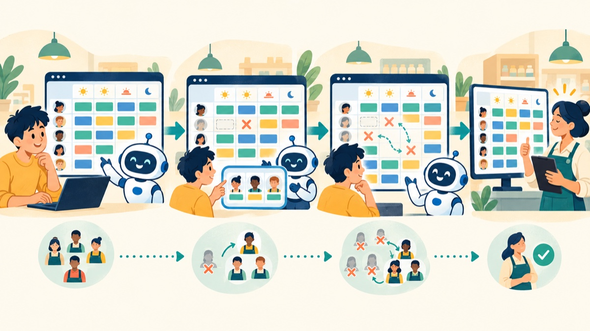
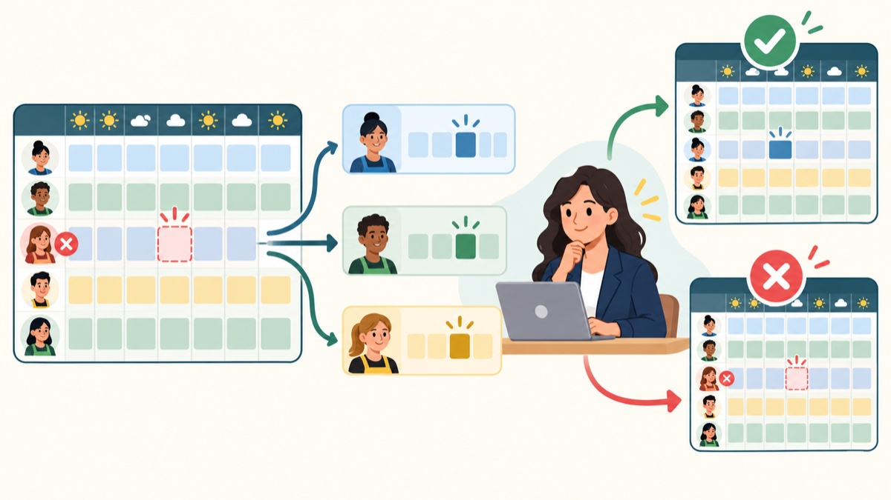
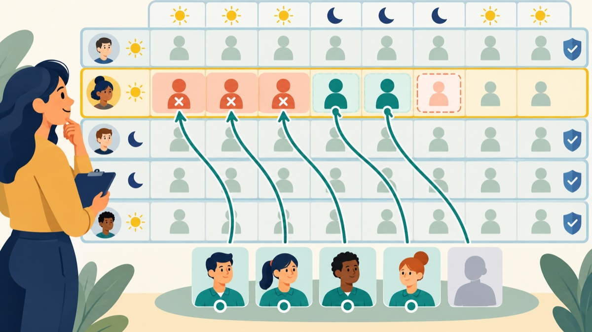

第三次・10/23（星期五）・企管二年級・人力資源管理
排班調整練習
從清楚的排班規格建立可操作的基本工具，再在原作品上追加臨時無法出勤與排班重組功能。
本單元練習把工作情境、排班規則和驗收條件交代清楚，請 AI Agent 建立一個能在瀏覽器操作的排班工具。先逐項檢查基本版本，再以最小必要修改加入新情境。你不需要手寫程式，但要能用規格和實際操作判斷結果是否正確。

本系統是教學範例，並非任何真實企業的官方系統或營運規定。職員資料皆為虛構；姓名取自小說角色，賣場職務與技能是本範例設定。排班結果只是待主管確認的建議草稿。請勿加入真實員工資料，也不要把生成結果當成已核定班表。
01練習情境和題目
情境與工作目標
你是迷你會員制賣場的主管，需要安排星期一至星期日的工作人力。請建立一個本機可開啟的網頁工具，依職員主要職務、技能與可工作時間產生一週班表，並清楚呈現未補足的人力需求。
系統使用 35 名虛構職員。每位職員有姓名、主要職務、技能、可排班日及可排時段。職務有主管、收銀人員、賣場服務人員、倉儲理貨人員、清潔人員及保全人員。
| 班別 | 時間 | 每個職務需求 |
|---|---|---|
| 早班 | 08:00–12:00 | 主管 1、收銀 2、賣場服務 1、倉儲理貨 1、清潔 1、保全 1 |
| 中班 | 12:00–16:00 | 主管 1、收銀 2、賣場服務 1、倉儲理貨 1、清潔 1、保全 1 |
| 晚班 | 16:00–20:00 | 主管 1、收銀 2、賣場服務 1、倉儲理貨 1、清潔 1、保全 1 |
排班規則與範圍
- 只能安排當天、該時段有空，且主要職務與技能符合需求的人員。
- 每人每天最多一個時段、每週最多六個時段；同一時段不可重複安排同一人。
- 依目前已排時段數由少至多分配；同數時用固定順序，讓相同輸入能重現相同結果。
- 找不到合適人員時保留缺額，顯示日期、時段、職務及缺少人數；不得以不合格人員補數字。
- 工具以簡單規則運作，不需最佳化演算法、登入、伺服器、資料庫或外部套件。
- 須提供整週班表、需求與實際人數、缺額提示，以及「產生班表」和「重新產生班表」操作。
02階段一：先做出基本排班工具
先把排班規則和職員資料交給 AI Agent，請它做出第一版排班網頁。完成後，照著檢查清單實際操作，看看班表和人數有沒有算對；如果發現問題，就告訴 Agent 你怎麼操作、看到什麼，以及你原本預期看到什麼。
請先閱讀「unit04-schedule-spec.md」與「unit04-fictional-staff.json」，整理你理解的系統目標、主要排班規則及驗收條件，再開始建立工具。
請在目前專案中建立繁體中文的迷你賣場排班系統，可在本機直接以瀏覽器開啟，不需伺服器、資料庫、登入或外部套件。使用 JSON 中全部 35 名虛構職員安排班表；姓名只顯示在實際排入的班別，不要在班表下方列出全公司名冊。把第一版另存為 v1-basic.html。
依規格安排星期一至星期日、每天早中晚三個時段。只能安排符合主要職務與技能、該日該時段有空、沒有同日衝突且每週未超過六個時段的人員。依目前排班數由少至多平均分配；同數時以固定順序選擇，讓同一資料重跑可得到相同結果。
畫面須有產生班表與重新產生班表操作，呈現日期、時段、職務、需求人數、實際人數及職員姓名；人力不足時逐項列出缺額。資料有問題時，顯示清楚的繁體中文提示。班表醒目標示為「待主管確認的建議草稿」。
完成後請說明如何開啟工具，並指出如何逐項檢查驗收條件。不要聲稱排班是最佳或唯一正確結果。第一版完成後檢查
- 可在本機瀏覽器開啟，介面為繁體中文，且使用 JSON 所列的 35 位職員資料排班，不在頁面下方列全公司名冊。
- 班表包含一週七天及每天三個時段；每個職務都列出需求人數、實際人數和姓名。
- 抽查人員時，確認其主要職務、技能、該日可排時間、當日其他班次及每週時段總數符合規則。
- 重新產生會重新計算班表；相同資料能重現相同結果。
- 缺額明確指出日期、時段、職務和缺少人數；沒有安排不合格人員。
- 所有班表都標示為待主管確認的建議草稿。
提供可重現的例子，例如：「我重新產生班表後，週三中班的收銀需求顯示 2 人，但表格只列出 1 人，缺額也沒有出現。請檢查需求人數、實際排班人數與缺額是否用同一份計算結果呈現，並保留其他已通過的功能。」描述畫面行為比只說「這裡錯了」更容易讓 Agent 定位問題。
03階段二：加入單人臨時無法出勤
第一版檢查沒問題後，接著練習加一個新功能：如果某位員工臨時不能上某一班，系統要找人補上，並先列出最多三種排法讓主管挑。這一版要保留原本的排班功能，也要讓主管可以取消、不套用任何方案。

先請 AI Agent 說明它打算改哪些地方、怎麼保留原本功能，再由你確認後開始修改。沒有合適人選時，就留下缺額並說明可以找臨時人力或向總部求援。
這一版要多做到的事
- 班表可切換查看星期一到星期日的單日畫面，或切回整週；預設先顯示星期一，減少一次看到太多內容。
- 只記錄這位員工在指定日期、時段不能出勤，不詢問病情或其他私人原因。
- 先把這位員工從該班移除，再找工作和技能符合、當天有空且沒有排到其他班的人補上；每人每週最多排六班。
- 最多列出三種不同排法；找到幾種就列幾種，不用硬湊三種。
- 每種排法都要說清楚調整了誰、原本在哪一班、改到哪一班、調整原因，以及還缺哪些人。
- 其他日期和班別不變。主管選擇後才套用；按取消就保留原班表。
- 套用後仍標示為待主管確認的草稿。找不到合適排法時要留下缺額，不要編出違反規則的班表。
請先檢視目前專案中的排班工具，確認現有畫面、資料結構、班表產生方式及已完成的功能。這是已檢查的基本版本，請勿重新產生整個系統、全面改寫程式或更換整體架構。
請先提出最小修改計畫，列出預計新增或修改的檔案、如何保留原功能，以及如何驗收新功能；先不要修改檔案，讓我檢視計畫。收到我確認後，再把完成的第二版另存為 v2-absence-rescheduling.html，保留第一版 v1-basic.html 不變。
新增班表檢視切換：可選星期一到星期日其中一天，或查看整週；預設先顯示星期一。切換畫面時，只改顯示內容，不改班表資料。
新功能：主管選擇一位已排班人員、日期及時段，標記該員於該時段無法出勤。系統將該員自該時段在班人力移除，依原排班規則提出最多三個彼此不同的可行重組方案。逐一檢查可工作時間、主要職務、技能、同日與同時段衝突、每週最多六個時段及需求人數。
每個方案列出被調整人員、原班別、新班別、調整原因及仍未補足需求。未受影響的班表保持原樣。只有在主管選擇方案後才能套用；取消時保留原班表。套用後仍標示為待主管確認的建議草稿。
若沒有符合規則的方案，清楚提醒目前無法重排，並建議主管考慮臨時人力或向總部支援。不要詢問私人請假原因，也不要要求該員回來工作。收到我確認修改計畫後，再進行最小範圍修改。完成後說明如何操作，並逐項確認原本產生班表與缺額提示仍可用。第二版完成後檢查
- 班表可切換查看星期一到星期日任一天，也可切回整週；切換畫面不會改動排班資料。
- 指定人員不再被計入受影響時段的實際出勤人力。
- 所有方案都符合資格、時間、撞班及每週時段上限；不會為了湊滿三個而違規。
- 方案清楚列出人員與班別變動及仍未補足需求。
- 主管選擇前班表不變；取消時保留原班表；套用後仍清楚標示待確認。
- 沒有可行方案時，顯示原因及可考慮的支援方式。
- 沒有詢問私人請假原因或要求無法出勤的人員回來工作。
04階段三：一次處理多人臨時無法出勤
第二版一次處理一位員工；這一版要能在同一天、同一班一次勾選好幾位不能出勤的員工，讓系統一起找替代人選。完成後，前兩版的功能也要繼續能用。

同一個人不能被排去補兩個位置。找不到人的缺額要照實列出；主管確認前先不要改班表。套用或取消方案時，也不能影響其他日期和班別。
這一版要多做到的事
- 班表可切換查看星期一到星期日任一天，或查看整週；沿用第二版的操作方式。
- 選好日期和時段後，主管可以一次勾選一位或多位已排班、臨時不能出勤的人員。
- 計算這次缺額時，先把勾選人員從這個班別移除，再逐項算出各工作還缺幾人。
- 最多列出三種不同排法；每種都要確認人選的工作和技能符合、當天有空、沒有撞班，而且每週不超過六班。
- 同一個人不能在同一方案裡補兩個位置；其他日期和時段也不能跟著改動。
- 每種排法都要列出不能出勤的人、支援的人、班別怎麼調整、調整原因，以及還缺哪些工作人手。
- 主管選擇前先不要改班表；按取消時維持原樣。套用後仍要標示為待主管確認的草稿。
請先檢視目前的第二版排班工具，確認班表資料結構、單人無法出勤流程、單日／整週切換、方案預覽與套用方式。第二版是已完成作品，請勿重做整個系統、全面改寫或移除單人處理功能。
請提出最小修改計畫，說明如何讓主管在選定同一日期與時段後，可同時選取一位或多位已排班人員標記無法出勤；如何把多個空缺一起規劃；以及如何保留既有單人處理、星期一至星期日單日／整週切換、缺額顯示、取消和主管確認流程。先不要修改檔案，待我確認計畫。
確認計畫後再實作：一次移除所有勾選人員在該日期、時段的指派，逐個職務重新計算空缺，提出最多三個不同的可行方案。每個完整方案要同時安排所有可找到的替代人員；同一人不得填補兩個位置，且須符合主要職務、技能、該時段可工作、當日未排其他班及本週最多六個時段。若有些缺額無法補足，可提出合規的部分方案並明列剩餘缺額；若完全沒有支援人員，清楚提醒主管考慮臨時人力或請總部支援。
每個方案逐一列出無法出勤人員、支援人員、原班別、新班別、調整原因、各職務需求與實際人數及尚缺人數。未受影響的日期和時段保持原樣。主管選擇前不套用；取消時不變更班表；主管套用後仍標示為待確認建議草稿。不得詢問病情或私人原因。
另存為 v3-multiple-absence.html，不覆蓋前兩版。完成後說明多人操作流程，並逐項檢查：只勾選一人時與第二版行為一致；勾選多人時不重複派人、不超過限制、不改動受影響範圍以外的班表，且能正確呈現剩餘缺額。第三版完成後檢查
- 班表保留單日／整週切換，而且切換時不會改動排班內容。
- 同一日期與時段可一次選取多位已排班人員。
- 系統同步移除所有被選取人員，並按職務計算全部空缺。
- 每個方案都聯合檢查資格、可排時間、同日衝突、週上限及重複指派。
- 最多三個不同方案；若只能部分補足，逐項呈現尚缺人數。
- 取消保持原排班，套用只更動指定日期與時段，其他班表不變。
- 原有單人處理、單日／整週切換與其他基本功能仍可使用。
05預期成果與檢查
以下三個可操作範例，分別示範三個階段完成後的樣子：第一版可排一週班表，第二版可處理一位員工臨時無法出勤，第三版則可一次處理多人。後一版會保留前一版已完成的功能。
- 第一版：迷你賣場基本排班工具（產生一週班表、檢視各班人力與缺額）
- 第二版：單人無法出勤與排班重組（可切換單日／整週，預覽最多三個方案，取消或由主管選擇套用）
- 第三版：多人臨時無法出勤與排班調整（沿用單日／整週切換，同時勾選多人並預覽最多三個方案）
完成後，每位學生或小組應能展示：
- 一個符合基本規格、可在本機瀏覽器操作的排班工具。
- 一份根據驗收條件完成的檢查紀錄與至少一項具體修正（如有發現問題）。
- 一個在保留既有功能的前提下逐步追加單人及多人無法出勤重組功能的第三版。
- 對未補足人力與主管確認責任的清楚說明。
先用完整規格建立第一版，再依驗收條件檢查。擴充時先理解既有作品，只提出完成新需求所需的最小修改；完成後重新檢查新舊功能。AI Agent 能協助產生工具，需求是否正確、資料是否合適及班表能否採用，仍由使用者與主管判斷。
檢查與分享成果
用基本版本和新功能各走一次完整情境，並記錄實際結果。查看方案時，不只確認畫面有變動，也要逐人驗證人員是否具資格、有空且沒有超出工時段限制。
| 展示項目 | 檢查重點 |
|---|---|
| 基本週班表 | 需求、實際人數、職員姓名及缺額是否一致；抽查排班規則。 |
| 標記無法出勤 | 指定人員是否自指定時段移除，其他時段是否保持不變。 |
| 檢視或取消方案 | 方案是否都合規；取消後原班表是否保留。 |
| 選擇並套用方案 | 變動與缺額說明是否清楚；狀態是否仍為待主管確認。 |
課堂反思
- 哪一條排班規則最需要明確寫進提示？你如何核對它？
- 發現錯誤時，你提供了哪些資訊讓 AI Agent 修正？
- 你如何確認 Agent 是在原作品上追加功能，而非讓原功能消失？
- 為什麼找不到可行方案時，系統必須顯示缺額和限制？